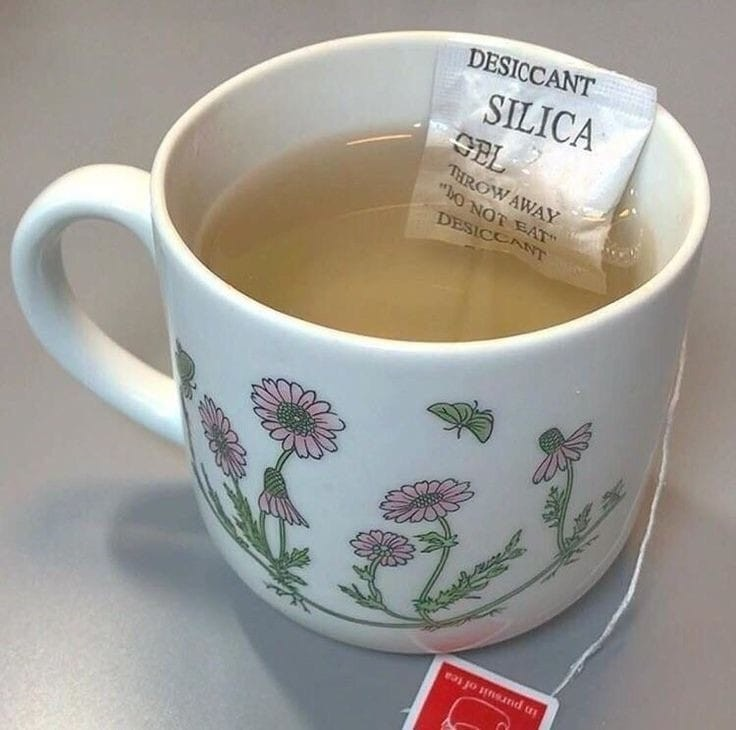
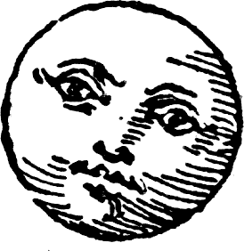

Sentents de Latin Sin Flexion
Compar vocabuls inter divers auxlings de Latin:
| Latin | Pater noster, qui es in caelis, sanctificetur nomen tuum. |
|---|---|
| Sin Flexion | Patr de nos, qui es in cael, que nomin de te fi sanctificat. | Peano's LsF | Nostro patre, qui es in caelos, que tuo nomine fi sanctificato. | Interlingua | Patre nostre, qui es in le celos, que tu nomine sia sanctificate. | Occidental | Patre nor, qui es in li cieles, mey tui nómine esser sanctificat. |
D'ad nos tea de silic de omni die.

Sons Idem
Primo quaesit de omn, hoc regul cum vowel de fin et pugnant de sons idem, utro es un problem aut non. Hoc tres mod, omn cum un solut:
- Vag mod, nomin, adjectiv aut verb fi diversont mod. Exampl: sicca(to dry)/sicco(dried) fi sic. Hoc es stabil cum auxvocabul, inspic in Anglic: cook[n], to cook[v].
- Par sentent, sed divers vocabul. Exampl: disseminate[v] et seeding[v], ils es utroq sem.
- Sin solut, stabil per retin sons idem de ils, aut altervocabul. Exampl: Talo(heel)/tale(such) heel vol fi ped post.
Respons es camb de hoc vocabuls in dictionar:
- sed(however/seat), sedil -> seat.
- ut(as/use), qual -> as.
- mens(meal/month), cib -> meal.
- sal(salt/jump), surg -> jump.
- gen(cheek/knee), gnath -> cheek.
- man(morning/hand), auror -> morning.
- pac(pay/pack), fasc -> pack and merc -> pay.
- pan (bread/cloth), tex -> cloth.
- sit (thirst/located), posit -> located.
- sum (assume/summit), vertic -> summit.
- vic (occasion/lane), via -> lane.
- vac (cow/empty), bov -> cow.
- mut(change/dumb), plumb -> dumb.
- tal (such/heel), ped post -> heel.

incoming: latin sin flexion